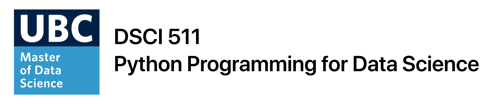

Python Programming for Data Science¶
This repository contains material used to teach DSCI 511 Python Programming for Data Science in the 2020/2021 offering of the University of British Columbia’s Master of Data Science Program. The course covers program design and data manipulation with Python. Overview of data structures, iteration, flow control, program design, and using libraries like NumPy and Pandas for data exploration and analysis.
Course Learning Outcomes¶
Click to expand!
By the end of the course, students are expected to:
Translate fundamental programming concepts such as loops, conditionals, etc into Python code.
Understand the key data structures in Python.
Understand how to write functions in Python and assess if they are correct via unit testing.
Know when and how to abstract code (e.g., into functions, or classes) to make it more modular and robust.
Produce human-readable code that incorporates best practices of programming, documentation, and coding style.
Use NumPy perform common data wrangling and computational tasks in Python.
Use Pandas to create and manipulate data structures like Series and DataFrames.
Wrangle different types of data in Pandas including numeric data, strings, and datetimes.
Lectures¶
Lecture |
Topic |
Optional Pre-readings |
Practice exercises |
|---|---|---|---|
1 |
Basics |
||
2 |
Loops & Functions |
WTP: Section 8 - Section 13 |
|
3 |
Unit Tests & Classes |
Python documentation: 9. Classes |
|
4 |
Style Guides, Scripts, Imports |
PEP 257: Style Guide |
|
5 |
Introduction to NumPy |
PDSH: Introduction to Numpy |
|
6 |
Introduction to Pandas |
PDSH: Data Manipulation with Pandas up to “Operating on Data in Pandas” |
|
7 |
Basic Data Wrangling with Pandas |
PDSH: Data Manipulation with Pandas |
|
8 |
Advanced Data Wrangling with Pandas |
PDSH: Data Manipulation with Pandas |
Dealing With COVID-19¶
The COVID-19 pandemic has affected us all in different ways: it’s okay to not be okay, and we all need to support each other during this time. With that said:
My (virtual) door is always open, please feel free to talk to me about how you’re doing and if/how I can help you (and if I can’t help you, I can point you in the direction of someone who can);
You don’t ever need to explain yourself; if you need support, need to miss a class, or need extra time for an assignment, just ask;
UBC has great student support resources related to COVID-19 (and otherwise).
Further, teaching/learning an intense graduate course like MDS online is a very new concept to all of us. If you have feedback on how I can improve the teaching experience, don’t hesitate to reach out - I’m sure things won’t be perfect from the get-go.
Finally, here is an official statement from UBC regarding the online learning experience:
During this pandemic, the shift to online learning has greatly altered teaching and studying at UBC, including changes to health and safety considerations. Keep in mind that some UBC courses might cover topics that are censored or considered illegal by non-Canadian governments. This may include, but is not limited to, human rights, representative government, defamation, obscenity, gender or sexuality, and historical or current geopolitical controversies. If you are a student living abroad, you will be subject to the laws of your local jurisdiction, and your local authorities might limit your access to course material or take punitive action against you. UBC is strongly committed to academic freedom, but has no control over foreign authorities (please visit http://www.calendar.ubc.ca/vancouver/index.cfm?tree=3,33,86,0 for an articulation of the values of the University conveyed in the Senate Statement on Academic Freedom). Thus, we recognize that students will have legitimate reason to exercise caution in studying certain subjects. If you have concerns regarding your personal situation, consider postponing taking a course with manifest risks, until you are back on campus or reach out to your academic advisor to find substitute courses. For further information and support, please visit: http://academic.ubc.ca/support-resources/freedom-expression.
Optional Additional Reference/Learning Materials¶
A Whirlwind Tour of Python (WTP), Jake VanderPlas (O’Reilly). Copyright 2016 O’Reilly Media, Inc., 978-1-491-96465-1.
Python Data Science Handbook (PDSH), Jake VanderPlas (O’Reilly). Copyright 2016 O’Reilly Media, Inc., 978-1-491-91205-8.
Python for Data Analysis, Wes McKinney (O’Reilly). Copyright 2013 O’Reilly Media, Inc, you can download chapters from the book for free from the UBC library.